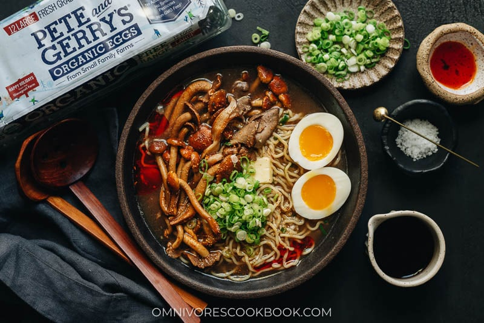

Mushroom Ramen

Description
A fast and easy mushroom ramen that has a rich tasting broth and scrumptious toppings. It is a perfect one-pot meal that is hearty, satisfying, and nutritious! {Vegetarian
Ingredients
- 2 Pete and Gerry’s Organic Eggs
- 2 tablespoons peanut oil (or vegetable oil)
- 4 cloves garlic , chopped
- 1/2 lb (225 g) assorted mushrooms , sliced or torn into bite-size pieces and separate the ones that do not require browning
- 1 tablespoon Shaoxing wine (or dry sherry)
- 4 cups mushroom broth
- 1/2 tablespoon soy sauce
- 2 green onions , sliced
- 1 tablespoon ginger , grated
- 1/8 teaspoon ground black pepper (or to taste)
- 2 packs (10-oz / 300 g) ramen noodles (or 2 packs instant ramen noodles, flavor packets discarded)
- 1 tablespoons butter , divided into 2 pieces
- Homemade chili oil (or your favorite hot sauce, and / or Japanese seven spice for garnish) (Optional)
Instructions
- Add water to a small pot, enough to cover all the eggs but don’t put the eggs in yet. Bring to a boil over medium-high heat. Slowly lower the eggs into the water using a ladle or slotted spoon. Turn to medium or medium-low heat. Let the eggs boil for 6 minutes for runny yolks, 8 minutes for semi-soft, and 11 minutes for hard-boiled.
- Prepare an ice-bath or a large bowl of cold water while boiling the eggs. Once the eggs are done cooking, immediately rinse the eggs with tap water for a minute to cool, then transfer to the ice bath. Allow the eggs to cool for another few minutes before peeling.
- In a medium-sized dutch oven or pot, heat the oil over medium-high heat until hot. Add the mushrooms. Stir a few times to coat with oil, then cook without stirring for 2 minutes or so, until the bottom turns golden brown. Flip to brown the other side, another 1 to 2 minutes.
- Add the garlic. Stir and cook for 30 seconds to release fragrance.
- Pour in the Shaoxing wine. Use your spatula to scrape off any browned bits stuck to the bottom of the pot.
- Add the mushroom broth, soy sauce, green onion, ginger, and black pepper. Bring to a broil and let the broth simmer for 5 minutes.
- Option 1 - If using ramen noodles, bring a medium pot of water to a boil. Cook the noodles according to package directions. Once done, drain the noodles and transfer to individual servings bowls.
- Option 2 - If using instant noodles, add the noodles to the pot of broth and cook until just turning tender, 2 to 3 minutes.
- Transfer the cooked broth to each serving bowl with the noodles. Top with the mushrooms and boiled eggs. Add the butter onto the mushrooms. Serve immediately with chili oil, hot sauce, and / or Japanese seven spice, if desired.
- To eat, add the butter into the ramen broth and enjoy!